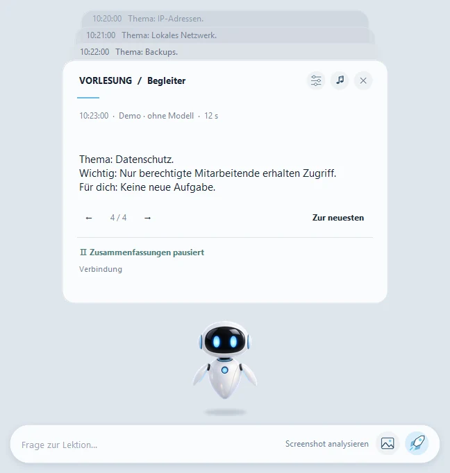

Lecture Companion
- Aufgabe
- Ich kam den Worten des Dozenten nicht hinterher: Während ich mich an das deutsche Wort erinnerte und es suchte, ging mir der Sinn des Gesagten verloren. Der Roboter hilft mir, im Zusammenhang der Vorlesung zu bleiben und sie aufzuarbeiten, ohne etwas ins Internet zu senden.
- Was ich gemacht habe
- Die Idee stammt von mir, wie bei PeakMP3; das Design wurde mit mir abgestimmt, den Code hat eine KI geschrieben, bei mir lagen Abnahme, Tests und der Rest.
- Wie geprüft
- In GitHub Actions laufen unter Windows Prüfungen ohne Modelle (verify.py); dem Release liegen SHA-256-Prüfsummen bei, und es gibt eine Demo ohne Teams mit künstlichen Daten. Auf einem zweiten sauberen PC wurde das Programm noch nicht geprüft.